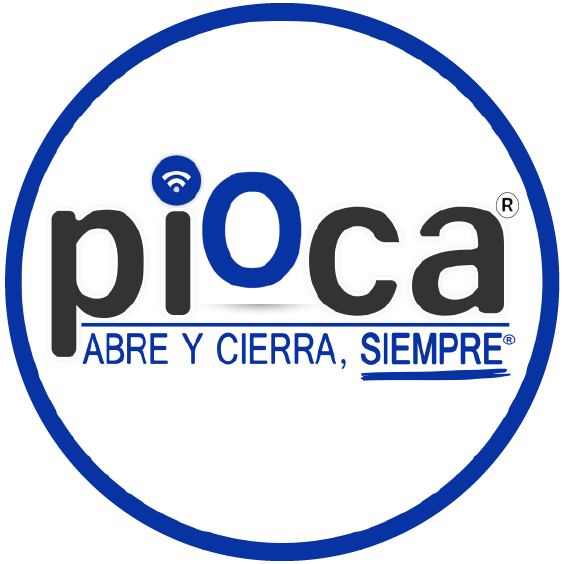
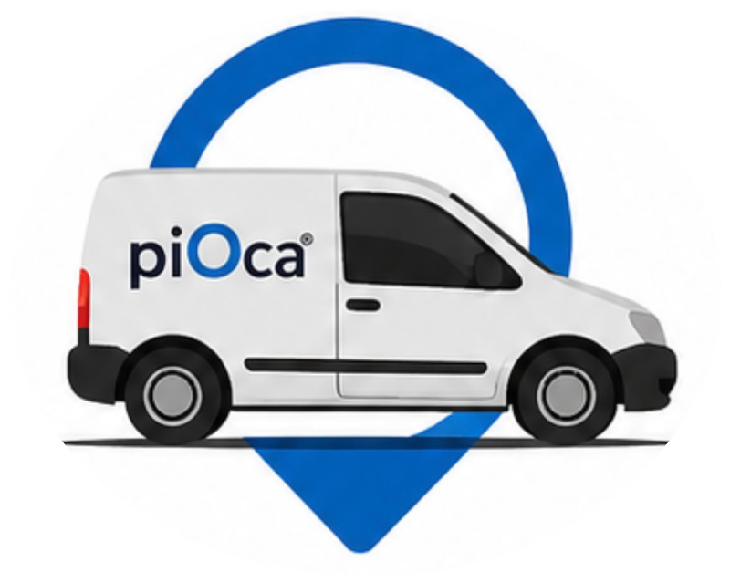

HORA DE LLEGADA APROXIMADA
--:--
UBICACIÓN ACTUALIZADA
hace 0 s
↻ REFRESCAR POSICIÓN
ESTAMOS EN CAMINO
Llegada aproximada:
--:-- hs
1
Seguimiento
iniciado
2
En camino
3
Cerca de tu
domicilio
4
Ya casi estamos
con vos

Respetar tu tiempo también es parte de nuestro servicio.